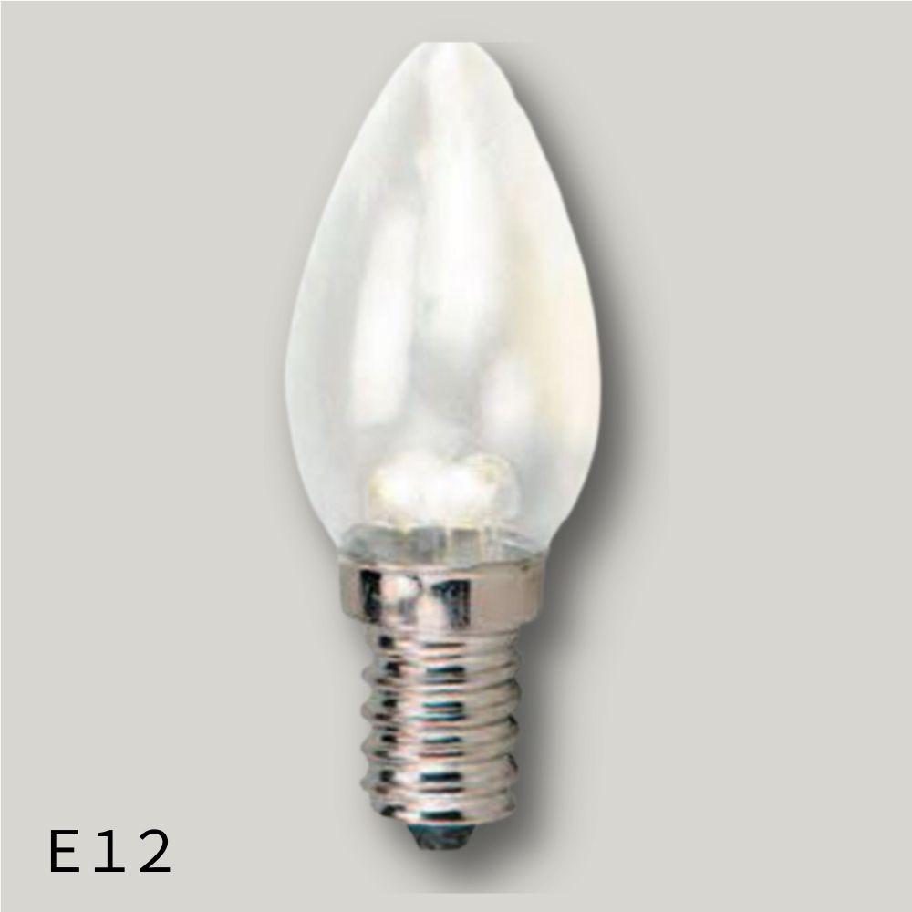
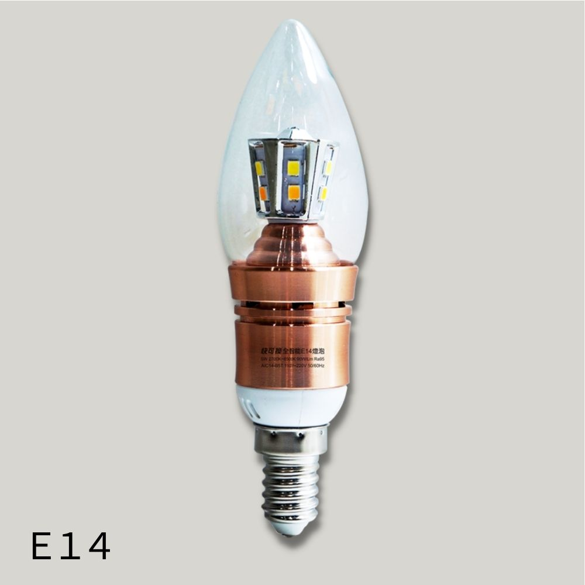
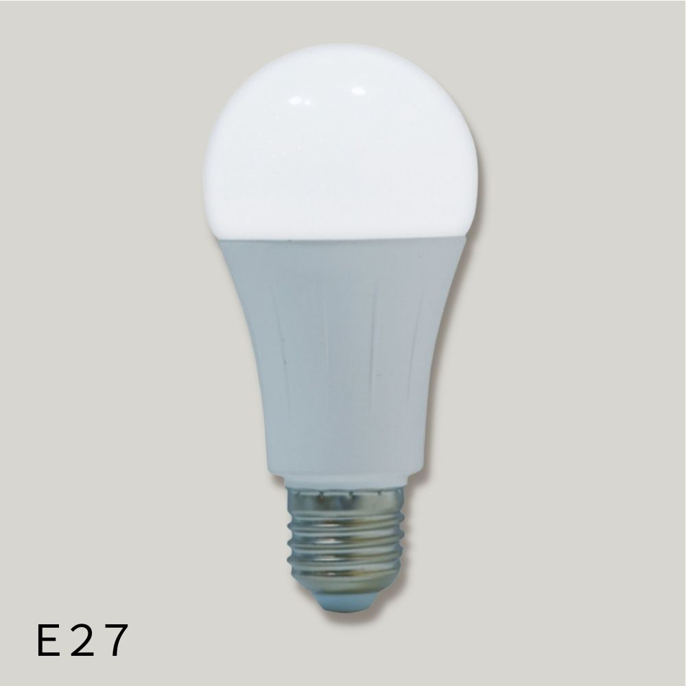

小北百貨
電器專區
這邊能幫助你解決電器小常識!
-
國際插頭
國際轉換插頭，也稱為萬用轉接頭或萬國插頭，是方便在不同國家或地區使用電子產品的工具。 它能將一個國家的插座轉換成另一個國家或地區常用的插頭類型，方便攜帶電器出國旅行或工作。
-
變壓器
選擇國外變壓器時，最重要的是確認目的地國家或地區的電壓和插座規格，並確保變壓器符合電器的功率需求。 此外，選擇具有多種轉接頭的萬用轉接器可以方便在不同國家使用。
-
燈泡
國際轉換插頭，也稱為萬用轉接頭或萬國插頭，是方便在不同國家或地區使用電子產品的工具。 它能將一個國家的插座轉換成另一個國家或地區常用的插頭類型，方便攜帶電器出國旅行或工作。
國際插頭
一、國際插頭
電壓:
確認欲前往的國家或地區的電壓標準，常見的電壓有110V (如日本、美國) 和220V (如歐洲、台灣、中國、香港)。
插座:
了解目的地的插座類型，例如台灣使用的A型插座，而英國使用G型插座，澳洲使用I型插座，歐洲多國使用C型插座。
以下是詳細的分辨方法：
1. 美規(US) 插頭:
- 形狀：兩個平行扁插腳.
- 適用國家/地區：美國、加拿大、台灣、日本、中國、菲律賓等.
- 電壓: 通常使用110V或120V。
2. 歐規(EU) 插頭:
- 形狀: 雙圓插頭，有兩個圓柱形的插腳。.
- 常見於: 歐洲大部分國家(如德國、法國、義大利)、韓國、俄羅斯等。
- 電壓: 通常使用220V或230V。
3. 英規(UK) 插頭:
- 形狀: 三角插頭，有三個扁形的插腳，其中一個插腳通常較長且較粗。
- 常見於: 英國、香港、新加坡、馬來西亞等。
- 電壓: 通常使用230V或240V。
4. 澳規(AU) 插頭:
- 形狀: 八字形扁插頭，有兩個扁形的插腳，且其中一個插腳呈傾斜狀。
- 常見於: 澳洲、紐西蘭、阿根廷、中國大陸等。
- 電壓: 通常使用230V或240V。

國外變壓器
二、國外變壓器
市面上專為旅行所用的旅行變壓器大致分成兩大類 !!
- 1.低瓦數 50~100W =>適用於一般電子產品，如手機、平板、筆電、行動電源...等等
- 2.高瓦數 1200~1600W =>適用於一般電器，如電磁爐、吹風機...等
各國電壓
- 日本 100V
- 中國 220V（需準備變壓器＋轉接頭）
- 香港、英國 220V-230V（需準備變壓器＋英規轉接頭）
- 韓國、歐洲 220V-230V（需準備變壓器＋歐規轉接頭）
- 美國 120V
(美國和台灣很像，不需要轉接頭和變壓器，電壓是120V，比台灣稍高一點點，不過這在電器的容許範圍內，所以不用帶變壓器與轉接頭。)
所以到底要不要變壓器？
如果是有支援全球電壓100V-240V的產品，那你可以不用帶變壓器，只需留意是否需要轉接頭。
至於吹風機、離子夾、捲髮器等高功率電器要特別注意！
不支援全球電壓就需要變壓器，最高支援功率，100V ▶ 650W，200V ▶1300W，如果功率過大，就不可以插！
燈泡
三、燈泡
燈泡瓦數是什麼？
瓦數越高＝越耗電，但不代表燈泡亮度越高！
「流明」，流明值(數字)越高，代表電燈的亮度越亮唷！不過，並不是越高流明的燈泡就是最適合，
E12、E14、E27 燈泡規格說明:
-

E12燈泡
常見應用:
『E12』螺口燈座-螺口燈頭直徑12mm，此規格大多用於小夜燈
-

E14燈泡
常見應用:
E14 燈泡因為尺寸較小，常被用於裝飾性燈具，例如水晶燈、壁燈，以及一些特殊造型的燈具，例如蠟燭型燈泡。
-

E27燈泡
常見應用:
數字“27”則表示螺口燈頭的直徑為27毫米。 這種燈泡是家庭中最常見的燈泡規格之一，適用於多種燈具，例如檯燈、吊燈等。